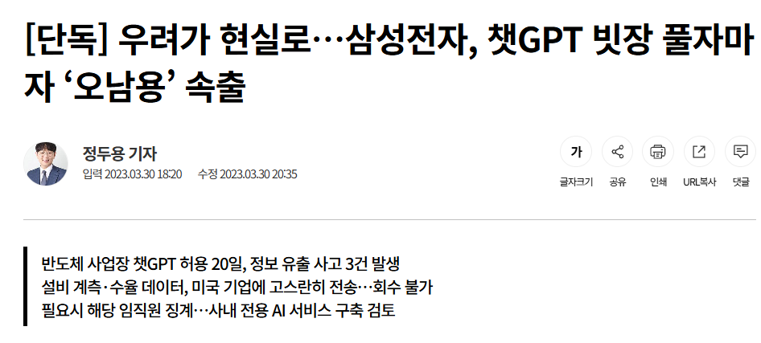
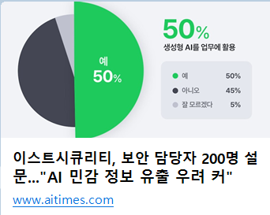

배경 1 · 현실의 기밀 유출 사고
급한 오류·회의록을 외부에 묻다
회사 기밀이 유출된다

회사 데이터 외부 AI 입력 1년 새 485% 폭증
삼성전자 반도체 부문 코드·회의록 유출 3건 발생
- 당장 급한 오류를 고치려 소스코드 전체를 복붙하고, 비공개 회의록을 통째로 넣어 요약을 맡겼다가 핵심 기밀이 외부 서버로 유출됨
실제 보안 사고 뉴스와 기업 데이터 반출 조사에서 확인한 세 가지 배경

회사 데이터 외부 AI 입력 1년 새 485% 폭증
삼성전자 반도체 부문 코드·회의록 유출 3건 발생

기업 보안 우려 1위 ‘민감 정보 유출’(64.5%)
하지만 개인 계정으로 몰래 쓰는 비율은 73.8%
덜 가리면 주변 내용으로 회사 정보가 드러나고
너무 많이 가리면 앞뒤 맥락이 깨져 이해 불가